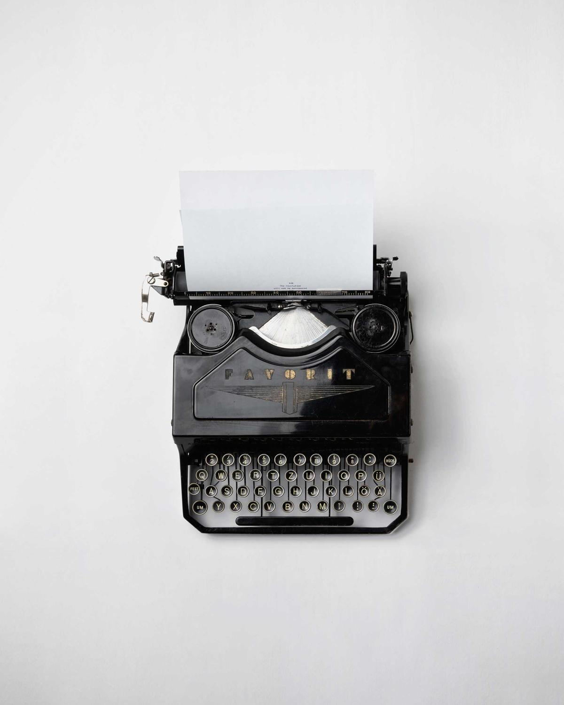
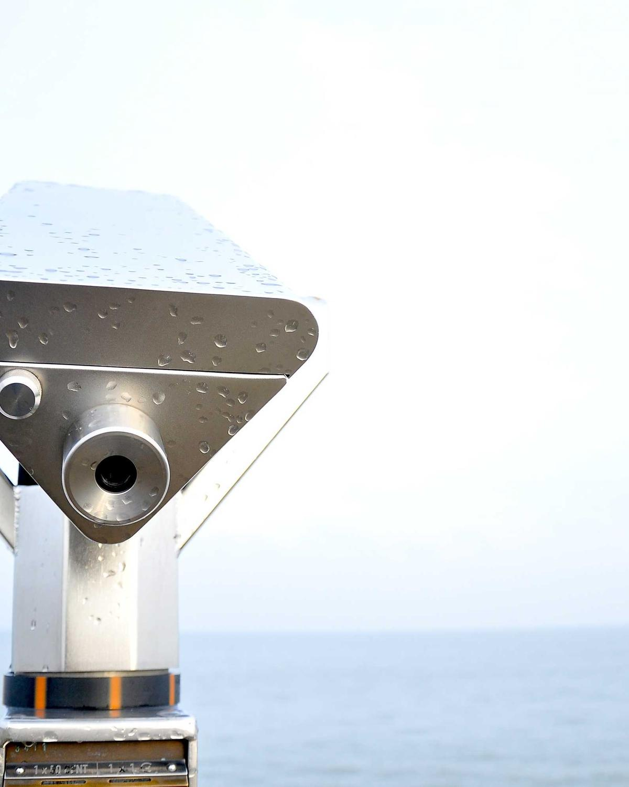
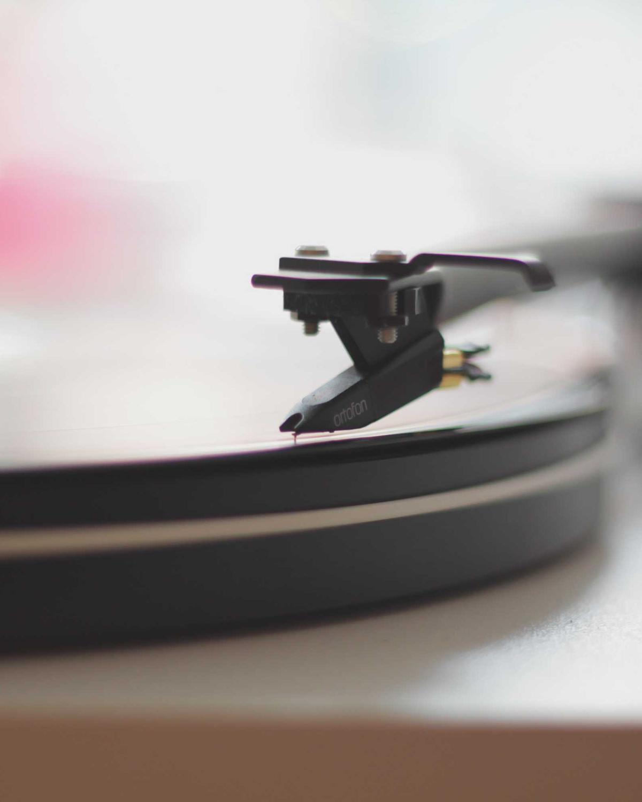
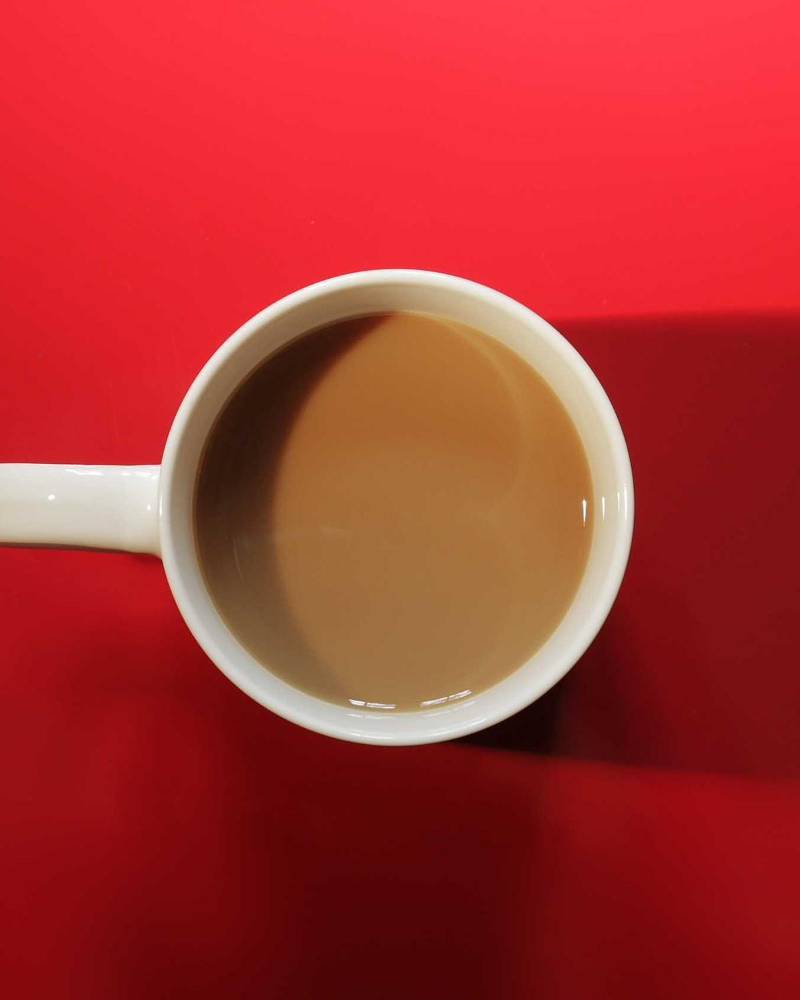

AI 产品实验
产品思考与交互原型
先找到一个值得解决的问题，再想 AI 应该参与哪一步。我更关心一个人能不能顺利完成眼前的事。
展开关注点
关注用户场景、Agent 工作流和可体验的原型。从具体任务出发，思考哪些步骤交给 AI，哪些判断需要保留在人手里。




从一个小问题出发，用一个能看见、能体验的结果回答它。这里是我持续关注的几个方向。
产品思考与交互原型
先找到一个值得解决的问题，再想 AI 应该参与哪一步。我更关心一个人能不能顺利完成眼前的事。
关注用户场景、Agent 工作流和可体验的原型。从具体任务出发，思考哪些步骤交给 AI，哪些判断需要保留在人手里。
AIGC 与影像叙事
从一个角色、一种光线或一个镜头开始，尝试用生成式工具把脑海中的画面变成素材。
关注角色一致性、分镜表达和创作工作流。记录提示词、失败原因和可复用的流程，让下一次创作少一点碰运气。
阅读记录与知识连接
把读过的内容写成自己的理解，再把零散的笔记连起来。用一个具体例子，检验一个概念有没有学会。
关注 AI 产品学习、Obsidian 和可追溯的知识整理。保留来源，也留下自己的判断，让笔记能在下次遇到问题时派上用场。
个人工具与生活实验
记录生活里重复发生的小麻烦，尝试给它们一个轻量的解法。一份清单，或者一个只解决一件事的小工具。
关注 LifeOS、信息整理和可复用 Skills。把重复的步骤整理下来，让工具贴近自己的实际使用习惯。
我喜欢做东西，也喜欢弄明白一件事为什么是这样。遇到一个好产品，会忍不住拆开看：它理解了什么问题，又做了什么取舍。
学习对我来说，最好能落在一个具体的产出上。一张图、一个原型、一篇讲清楚问题的笔记，都比收藏更多链接更有意思。
bmb.
关于 AI 产品、视觉创作，
或者一个还没想清楚的小问题。